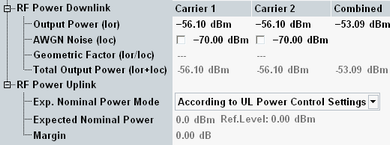

The parameters in this section provide the general power settings.

The following parameters configure the power characteristics in DL.
Sets the base level of the generator. The level represents the total output power of the base station signal during a call (state connected), averaged over 1 frame. A possible DTX mode for the TFCI bits is not considered. The individual physical channel levels are defined relative to the base level (see "Level").
If a multi-carrier scenario is active, you can configure the output power per carrier. The total power of all carriers is also displayed. If you modify it, all carrier powers are increased/decreased by the same amount so that the new total power is reached.
- The used frequency bandwidth of all carriers is maximal 80 MHz
- Smaller output power range, -6 dB less per downlink carrier
- Signal dynamics lost, especially for the weaker downlink carrier
Total level of the additional white Gaussian noise (AWGN) interferer in dBm (the spectral density integrated across the bandwidth of 3.84 MHz). The signaling unit adds the AWGN signal to the DL WCDMA signal unless AWGN is switched off. Like the output channel power, the AWGN level is varied as a function of the external output attenuation setting.
The range of values is sufficient for all tests specified in the conformance test specification 3GPP TS 34.121. The interferer properties comply with the requirements of 3GPP. Refer to 3GPP TS 34.121, section 7.1.2 (minimum bandwidth 5.76 MHz, flatness less than ±0.5 dB, peak to average ratio at a probability of 0.001 % above 10 dB). An AWGN signal source simulates realistic propagation conditions of the DL signal. It is needed for many of the performance tests and support of RRM tests described in 3GPP TS 34.121.
The signal at the output connector is limited to the maximum level stated in the data sheet. When the settings result in a signal exceeding this limit, the AWGN noise is decreased automatically.
If the multi-carrier scenario is active, the same settings apply to all carriers.
For fading scenarios, this parameter is disabled, so that AWGN cannot be added by the signaling unit. Instead, AWGN can be added by the fader (external or internal).
Option R&S CMW-KS410 required.
Remote command:Displays the ratio of the output channel power (Ior) to the AWGN noise power (Ioc). Together with the absolute output channel power, the geometric factor is a measure for the signal quality. An external output attenuation has the same effect on Ior and Ioc. So, the geometry factor corresponds to the received channel power spectral density Ior divided by Ioc at the UE receiver (see 3GPP TS 34.121).
If the multi-carrier scenario is active, the geometric factor is displayed per carrier.
Option R&S CMW-KS410 required.
Remote command:Sum of the output channel power (Ior) and the AWGN noise power (Ioc). This value cannot be set but is displayed for information.
If the multi-carrier scenario is active, the information is displayed per carrier. Also the sum of all powers is displayed.
Remote command:These parameters configure the expected UL power. The displayed reference level is calculated as the sum of expected nominal power and margin.
- "Manual"
In manual mode, the expected nominal power and margin can be defined manually.
An appropriate expected nominal power value for WCDMA signals is the peak output power at the DUT during the measurement interval.
The margin is used to account for the known variations (crest factor) of the RF input signal power. Appropriate values depend on the configuration of the UL WCDMA signal, for example, on the active channels and gain factors. For a 12.2 kbps reference measurement channel (RMC), a value of 5 dB is appropriate. - "According to UL Power Control Settings"
While a downlink signal is available, the expected nominal power and the margin are calculated automatically from the UL power control settings and displayed for information.
As long as no call or connection has been set up, the expected power corresponds to the expected initial preamble power, see "Exp. Initial Preamble Power" and a high margin is used.
During a call/connection, the values depend, for example, on the TPC settings, the power class of the UE, the maximum power allowed in the cell and the beta factors.
The automatic mode is not recommended for the "Phase Disc..." and "Single Pattern Alt." TPC setups. Use the manual mode instead.
For all other TPC setups, the automatic mode can be used. For the TPC test steps E to H, the values are optimized several times per test step. These changes are performed too fast to display them all at the GUI.
For spectrum measurements with a "Closed Loop" or "All 1" TPC setup, consider to use the manual mode to optimize the dynamic range.
If all power settings are configured correctly, the actual input power at the connectors is calculated as the "Reference level" minus the "External Attenuation (Input)" value. Note, that the actual input power must be within the level range of the selected RF input connector. Refer also to the data sheet.
Remote command: